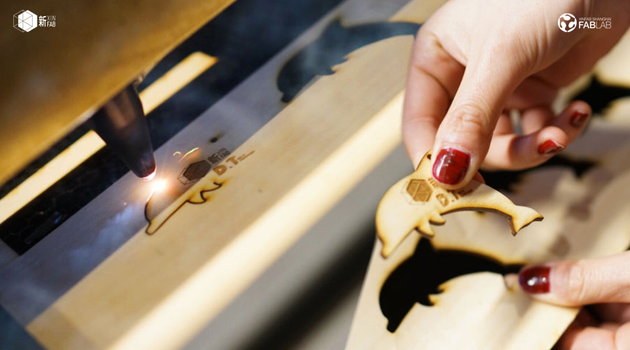

WORKSHOP
Learn Laser cutting and the basics of Illustrator | 介绍激光切割+Illustrator

When:Saturday, April 22, from 1pm to 3pm
Where: Xinfab - 665,Changhua Road, Jing'an District, Shanghai (DT Space)
Price: 100 RMB
Learn the basics of laser cutting and Adobe Illustrator with us on Saturday, 22 April, from 1pm to 3pm!
You will laser cut on wood and take a small custom design home with you.
Adobe Illustrator is a vector graphics software that allows you to create your own custom 2d designs and use them to cut and engrave different materials with a laser cutter. This powerful tool allows you to unleash your creativity and make your ideas a reality.
Things you should bring:
// A laptop and laptop charger
// Please install Illustrator before you come! (Trial version is OK)
// Your passion, curiosity, and questions
///////////////////////////////////
WORKSHOP SCHEDULE
// STEP 1: ILLUSTRATOR
_Introduction to Illustrator
_Create the basic shapes of your custom design
// STEP 2: LASER CUTTER
_Introduction to laser cutting
_Learn how to use Xinfab's laser cutter
_Laser cut your small custom design
///////////////////////////////////
HOW TO SIGN UP
Scan the QR code below and pay the workshop fee as instructed:
Questions? Send an email to info@xinfab.com.
///////////////////////////////////
ABOUT THE TEACHER

Jade Young is a communicator with a humanitarian and U.N. background. Jade loves to draw, graphic design and speak multiple languages. She joined Xinfab early this year as the new space manager. For Jade, life is a learning process and one should never stop learning new things.
时间:：4月22日星期六，13:00 - 15:00
地点： 新Fab - 上海市静安区昌化路665号（DT空间）
价格： 100元
了解如何使用激光切割机和Adobe Illustrator与我们星期六，4月22日，从下午1点到3点！
你将激光切割木材，并采取一个小的定制设计家与你。
Adobe Illustrator是一个矢量图形软件，允许您创建自己的自定义2d设计，并使用它们用激光切割机切割和雕刻不同的材料。 这个强大的工具，让你释放你的创造力，使你的想法成为现实。
需要带上
// 笔记本电脑及其充电器
// 请先安装好Illustrator软件（试用版是OK的）
// 你的热情、好奇心和问题
///////////////////////////////////
如何注册
扫描上面的QR码
有问题? 发送电子邮件到 info@xinfab.com.
///////////////////////////////////
关于教师
Jade Young是一个有人道主义和联合国背景的传播者。 Jade喜欢画画，平面设计和说多种语言。 她刚刚加入新fab作为新的经理和空间经理。对于Jade，生命是一个学习过程，每一个人永远不应该停止学习新事物。